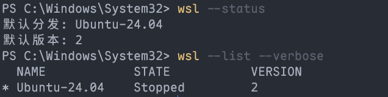
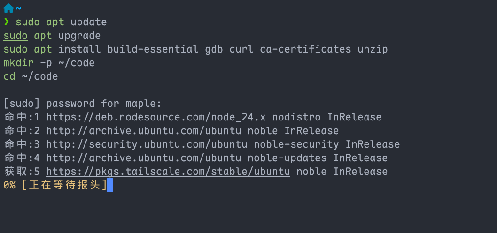
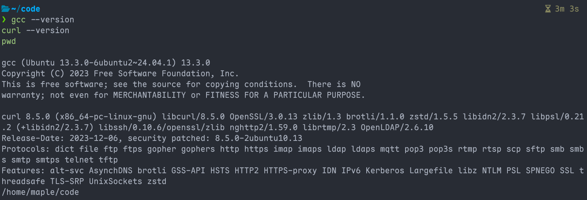
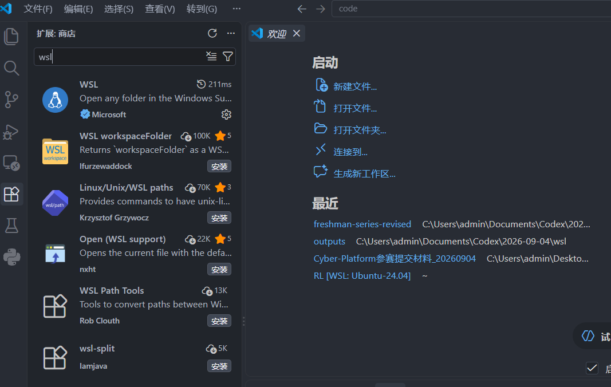
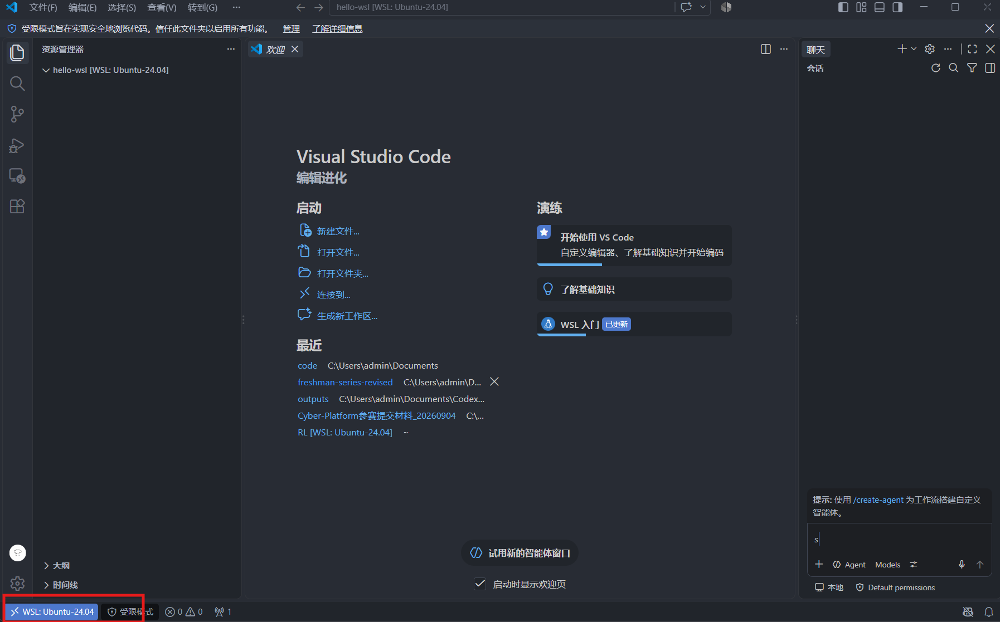

03.2：WSL + VS Code
本章完成后，Windows 上的 VS Code 可以打开 Ubuntu 中的项目。先完成 Windows 下的 VS Code 生产环境。
1. 打开管理员 PowerShell
- 按 Win 键，搜索
PowerShell。 - 在“Windows PowerShell”右侧点击 以管理员身份运行。
- Windows 询问是否允许更改时，点击“是”。
检查成功： 通过“以管理员身份运行”打开，并完成 Windows 权限确认；窗口标题通常含“管理员”或 Administrator。当前目录是 System32 并不能证明拥有管理员权限。
2. 安装 Ubuntu 24.04
在刚才的管理员 PowerShell 中执行：
执行完成后按提示重启电脑。重启后从开始菜单打开 Ubuntu 24.04 LTS。
第一次启动时：
- 等待安装完成。
- 在
Enter new UNIX username:后输入一个小写英文用户名（任意你喜欢的），例如alice。 - 在
New password:后输入密码；屏幕不显示字符是正常的。 - 再输入一次相同密码确认。
检查成功： 你看到类似 alice@电脑名:~$ 的 Ubuntu 提示符。
3. 验证 WSL2
关闭 Ubuntu，打开普通 PowerShell，执行：
检查成功： 列表中有 Ubuntu-24.04，且 VERSION 是 2。

如果版本不是 2，在管理员 PowerShell 执行：
4. 安装 Ubuntu 基础工具
打开 Ubuntu，逐行执行：
sudo apt update
sudo apt upgrade
sudo apt install build-essential gdb curl ca-certificates unzip
mkdir -p ~/code
cd ~/code
第一次 sudo 会询问第 2 步设置的 Linux 密码；输入时没有显示是正常的。

检查：

检查成功： 前两条显示版本号，最后一条是 /home/你的用户名/code。
5. 让 VS Code 连接 WSL
- 在 Windows 中打开 VS Code。
- 按 Ctrl + Shift + X。
- 在左侧扩展面板顶部的搜索框输入
ms-vscode-remote.remote-wsl，点击发布者为 Microsoft 的 WSL，在详情页点击“安装”。这里是在 Windows 的 VS Code 安装，不是在 Ubuntu 中下载安装 Linux 版 VS Code。

- 回到 Ubuntu，执行：
第一次运行会下载 WSL 侧组件，等待 VS Code 打开。
检查成功： VS Code 左下角显示 WSL: Ubuntu-24.04 或类似文字；新建终端后 pwd 显示 /home/.../code/hello-wsl。

官方入口：安装 WSL、WSL 基础命令、在 WSL 中使用 VS Code。
6. 在 WSL 中编译并运行 C
在已连接 WSL 的 VS Code 中，点击“终端 → 新建终端”。执行 pwd，确认路径为 /home/你的用户名/code/hello-wsl。后续命令在这个 Ubuntu 终端执行。
- 先确认窗口左下角显示 WSL，再按
Ctrl+Shift+X，搜索ms-vscode.cpptools，点击 Microsoft 的 C/C++。在扩展详情中点击“安装到 WSL: Ubuntu-24.04”（后缀以实际发行版为准）；若扩展已列在“WSL: Ubuntu-24.04 - 已安装”分组中则跳过。只在“本地 - 已安装”分组中看到它还不够。 - 按
Ctrl+Shift+E，在左侧HELLO-WSL文件夹下面的空白处右键 → “新建文件”，输入hello.c并回车。粘贴以下内容到中间编辑区，按Ctrl+S保存：
- 在 Ubuntu 终端逐条运行：
检查成功： 输出 Hello, C!。编译失败就先处理错误，不要继续运行。Windows 中的 .exe 编译步骤和编译器路径不用复制到这里。
7. 在 WSL 中用 uv 管理 Python
Windows 中安装过 uv 的同学，也要在 Ubuntu 中安装一次。以下命令全部在 Ubuntu 终端执行。
7.1 安装 uv 与 Python
使用 uv 官方安装脚本：
安装成功后，关闭这个 Ubuntu 终端并重新打开，执行：
检查成功： uv 能显示版本，Python 3.13 安装成功。若 uv 提示找不到命令，按安装器末尾的 PATH 提示操作；默认安装位置可用 ~/.local/bin/uv --version 检查。若这个文件也不存在，先看安装脚本是否下载成功。
7.2 创建独立项目
逐条执行：
mkdir -p ~/code/hello-python-uv
cd ~/code/hello-python-uv
uv init --python 3.13 --vcs none
uv sync
code .
使用新的空目录。如果提示已有 pyproject.toml，确认是你之前建立的同一项目后只运行 uv sync，不要覆盖已有文件。
在新打开的窗口中先确认左下角仍显示 WSL，再按 Ctrl+Shift+X，搜索 ms-python.python，点击 Microsoft 的 Python 扩展 → “安装到 WSL: Ubuntu-24.04”。同样检查 ms-python.vscode-pylance 与 ms-python.debugpy 在 WSL 的已安装分组中。
按 Ctrl+Shift+P，运行 Python: Select Interpreter，选择当前项目的 .venv/bin/python。找不到时，选择“输入解释器路径”，填写 /home/你的Linux用户名/code/hello-python-uv/.venv/bin/python。
7.3 运行与添加依赖
按 Ctrl+Shift+E 回到左侧项目文件列表，在 HELLO-PYTHON-UV 文件夹下面的空白处右键 → “新建文件”，输入 hello.py 并回车。在中间编辑区粘贴以下内容，按 Ctrl+S 保存：
在这个 VS Code 窗口的 Ubuntu 终端逐条执行：
uv run python hello.py
uv add requests
uv run python -c "import requests; print(requests.__version__)"
uv tree
检查成功： 输出问候语、当前项目的 .venv/bin/python 路径、requests 版本和依赖树。
下次继续时打开这个项目，执行 uv sync，再用 uv run python hello.py 运行。移除不再需要的依赖用 uv remove requests；重新添加用 uv add requests。
保留 pyproject.toml、uv.lock、.python-version 和源代码。换电脑先安装 uv，再进入复制或克隆的项目目录执行 uv sync --locked。每个系统重新生成自己的 .venv，不复制 Windows 的虚拟环境；运行前不用手动激活环境。
通过官方独立安装器安装的 uv 可用 uv self update 更新。项目操作参考 uv 官方项目教程。
8. 卡住时这样做
wsl --install只显示帮助：先执行wsl --list --online，再执行wsl --install -d Ubuntu-24.04。- 下载停在
0.0%：在管理员 PowerShell 执行wsl --install --web-download -d Ubuntu-24.04。 code .找不到：先关闭并重新打开 Ubuntu 后重试。仍失败时回到 Windows 的 VS Code，按Ctrl+Shift+P，输入WSL: Connect to WSL using Distro，选择 Ubuntu-24.04。连接后点击“文件 → 打开文件夹”，输入/home/你的Linux用户名/code/hello-wsl并确认。以后仍需要修复code .时，重新运行 03.1 的 Windows VS Code 安装程序，核对“添加到 PATH”已勾选。- BIOS 虚拟化错误：进入 BIOS/UEFI，开启 Virtualization、Intel VT-x 或 AMD-V；学校设备被锁定时联系管理员。(这一步比较危险，建议先问问Qoder这种AI IDE)
完成清单
- [ ] Ubuntu-24.04 的
VERSION为 2。 - [ ] Ubuntu 中的 gcc、curl 可用，C 程序运行成功。
- [ ] WSL 自己的 Python 虚拟环境已建立，程序运行与依赖导入成功。
- [ ] 已建立
~/code/hello-wsl。 - [ ] VS Code 左下角显示 WSL。
下一篇：04 账号与代码同步。